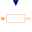

ReluctanceIcon for reluctance / permeance components |
Extended by (6)
|
Modelica.Magnetic.QuasiStatic.FluxTubes.BaseClasses Base class for leakage flux tubes with position-independent permeance and hence no force generation; mu_r=1 |
|
|
Modelica.Magnetic.QuasiStatic.FluxTubes.Shapes.FixedShape Flux tube with fixed cross-section, fixed length and linear material characteristics |
|
|  |
Modelica.Magnetic.QuasiStatic.FluxTubes.Basic Variable permeance |
|
Modelica.Magnetic.QuasiStatic.FluxTubes.Basic Variable reluctance |
|
|
Modelica.Magnetic.QuasiStatic.FluxTubes.Basic Constant permeance |
|
|
Modelica.Magnetic.QuasiStatic.FluxTubes.Basic Constant reluctance |